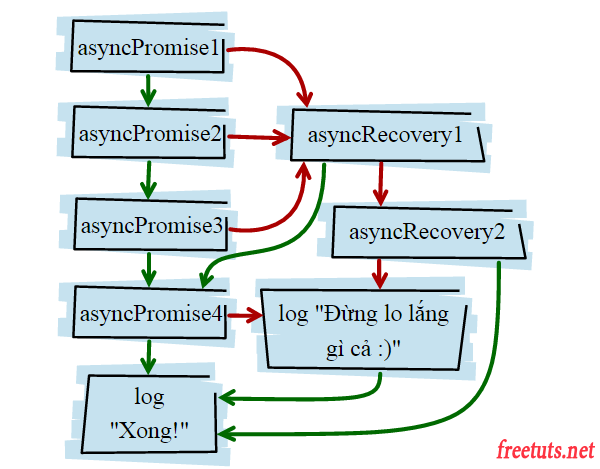

Khi sử dụng thenable liên tiếp thì kết quả return của phương thức then() hiện tại sẽ quyết định trạng thái của phương thức then() tiếp theo. Ví dụ then() phía trên return về một Promise Rejected thì then() phía dưới sẽ nhận một trang thái Rejected.

Trong hình này đường màu xanh mô tả cho Async Promise return về một Fulfilled và màu tím mô tả cho Asycn Promise return về một Rejected.